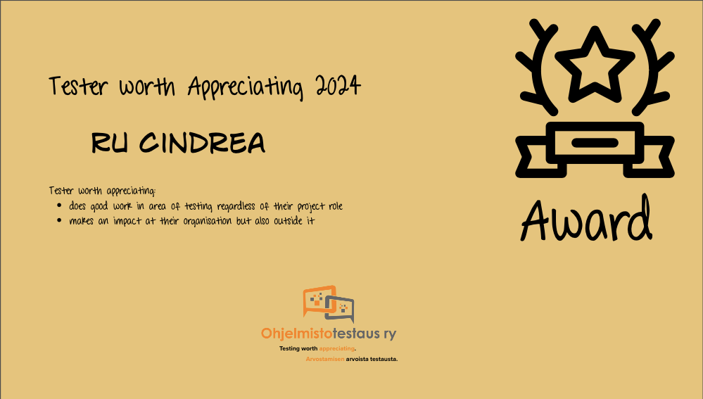

Tester Worth Appreciating 2024
Published: 1.11.2024 Ru Cindrea is a versatile professional in exploratory testing and test automation, as well as one of the three founders of Altom. Originally from Romania, Ru relocated to Finland and has become a super expert in mobile testing, as well as the architect and developer of Altom's own mobile game testing automation tool. She has a unique ability to combine exploratory testing with test automation and leverages her excellent holistic view to support clients as a consultant in various software development projects.
In addition to mobile testing, Ru has tested a wide range of systems, from embedded software to cloud services. Her areas of expertise include automating the testing of embedded systems and organizing diverse automation testing setups - from technical instrumentations to the use of physical touch robots.
In 2024, her consulting work on model-based test automation was featured in issue 1/2024 of the Sytyke magazine. The reliability test automation based on a UI model discovered errors that other automation tools had not found.
Ru shares her expertise at conferences and serves as an instructor for the BBST course series. BBST is known as the best, but also the most challenging, course in the field of testing.